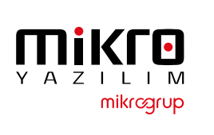
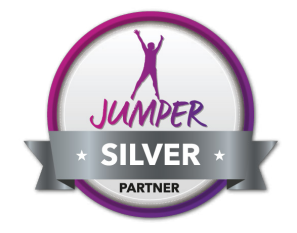
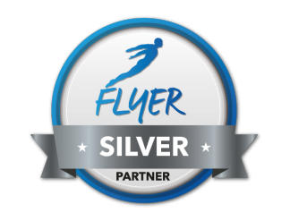
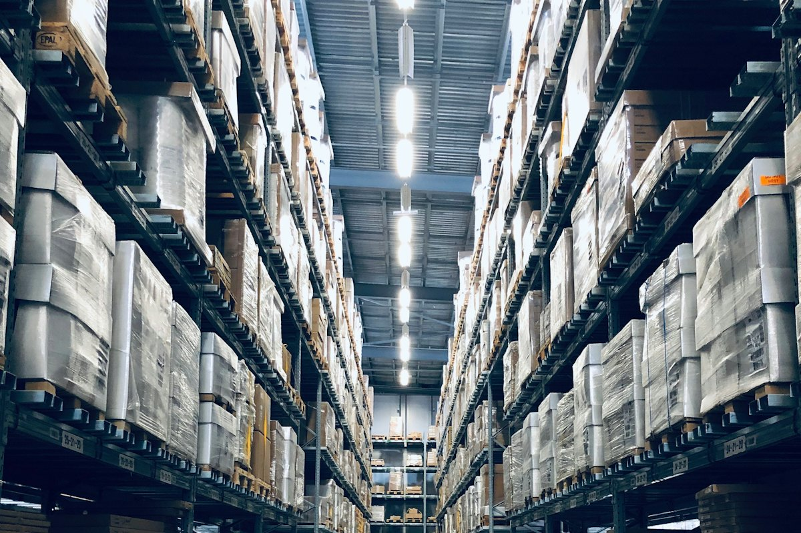
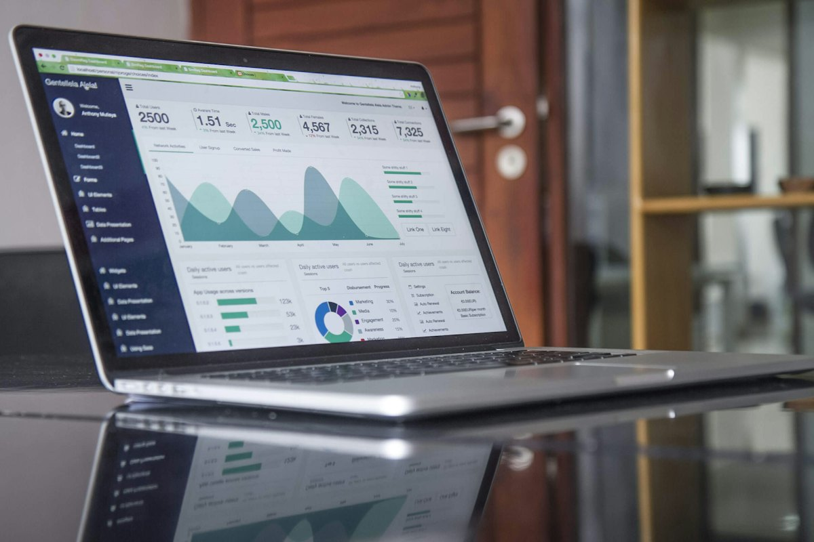
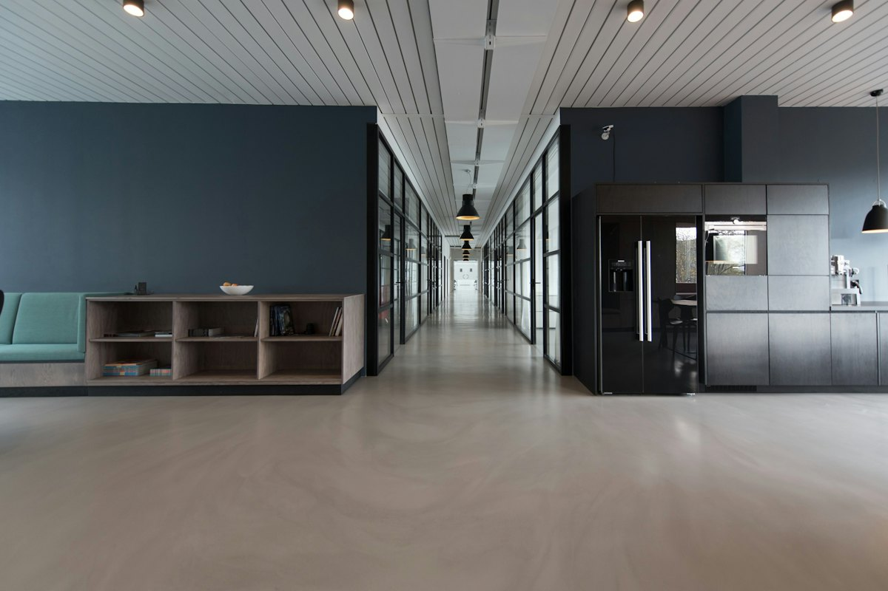

Mikro Run
Esnaf ve mikro işletmeler için ekonomik ERP. e-Dönüşüm paketi dahil gelir.
- Faturalama
- Stok takibi
- e-Dönüşüm
- Raporlar
Stok, satış, muhasebe ve e-Dönüşüm aynı yerde çalışır. İşletmenize uygun Mikro ERP kurulumunu biz yapar, eğitimini verir, 7/24 destekleriz.

Yetkili çözüm ortağı 15+ yıl deneyim 500+ mutlu müşteri 7/24 teknik destekJumper ve Flyer ürün ailelerinde akredite Silver Partner'ız. Lisans, kurulum, eğitim ve destek tek elden — arada üçüncü bir firma yok.

JumperSilver Partner
FlyerSilver PartnerSipariş girildiği anda stok güncellenir, kritik seviyeye inen ürün için tedarik uyarısı çıkar. Depo ve satış aynı veriyle çalışır.

Faturayı ayrı portalda kesmezsiniz. GİB başvurusundan entegratör bağlantısına kadar kurulumu biz yapar, yasal uyumluluğu takip ederiz.
Anlık verilerle doğru kararlar alın. Mikro Şirketim ile satış, tahsilat ve cari bakiyeyi telefonunuzdan takip edin.

Dört üründen hangisinin size uyduğunu ücretsiz danışmanlıkta birlikte belirliyoruz.
Esnaf ve mikro işletmeler için ekonomik ERP. e-Dönüşüm paketi dahil gelir.
KOBİ'ler için kapsamlı ERP. İşiniz büyüdükçe yazılımınız da sizinle büyür.
Grup şirketleri ve holdingler için tam entegre kurumsal ERP platformu.
Mükellef yönetimini kolaylaştıran, müşavirler için profesyonel çözüm.
Pazaryeri siparişleriniz doğrudan ERP'ye düşer, stok tek yerden yönetilir.

Deren Plaza'daki ofisimizden 500'den fazla işletmeye destek veriyoruz. Telefon, uzaktan erişim ya da yerinde — hangisi gerekiyorsa.
İş analizinden eğitime, kurulumdan 7/24 desteğe kadar sürecin tamamında yanınızdayız.
İhtiyaçlarınızı analiz ederek en uygun çözümü belirliyoruz.
Profesyonelce kuruyor, mevcut sistemlerinizle entegre ediyoruz.
Ekibinizi kapsamlı eğitimlerle donatıyoruz.
7/24 teknik destek hizmetimizle her an yanınızdayız.
Yazılımınızı güncel tutuyor, performansını izliyoruz.
Tüm e-belge süreçlerinizde uzman danışmanlık.
Neyin ne zaman yapılacağını baştan bilirsiniz.
Bize ulaşın, ihtiyaçlarınızı dinleyelim.
İşletmenizi ve süreçlerinizi analiz edelim.
Size özel çözüm ve fiyat sunalım.
Kuralım, verileri aktaralım, entegre edelim.
Ekibinizi eğitimlerle hazırlayalım.
7/24 destek ve bakımla yanınızda olalım.
Mikro Yazılım İş Ortağı'yız. 2017'den beri Mikro Yazılım'ın ERP ürünlerini işletmelere kuruyor, iş analizinden eğitime ve 7/24 teknik desteğe kadar sürecin tamamında yanınızda oluyoruz.
1-5 çalışan için Mikro Run, 5-50 için Mikro Jump, 50+ ve grup şirketleri için Mikro Fly. Mali müşavirler için Mikro Müşavir var.
Mikro Jump ve Fly'da tüm e-Dönüşüm çözümleri dahildir. Mikro Run'da e-Dönüşüm paketi ürünün içinde gelir.
Evet. Veri aktarımı kurulum hizmetimizin bir parçası. Mevcut sistemlerinizle entegrasyonu da biz yapıyoruz.
7/24 teknik destek veriyoruz: telefon, uzaktan erişim, yerinde destek ve öncelikli müdahale. Güncelleme, güvenlik yamaları ve yedekleme bakım hizmetimize dahil.
Olur. Trendyol, Hepsiburada, N11 ve Amazon entegrasyonu, depo için Zeus WMS, bayi ve saha satış için B2B/B4B çözümümüz var.
Ücretsiz demo ve danışmanlık için hemen iletişime geçin.